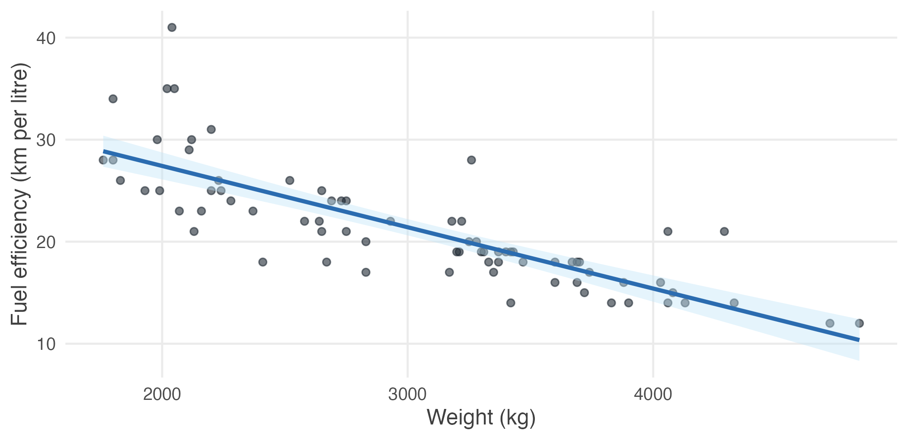

6.11 Practice problems
Work each one before opening the solution. The question bank that follows has no answers.
Concept checks
6.1 Why does regression estimate a conditional mean rather than predict individual outcomes?
Because \(y\) is not determined by \(x\). At any given attendance level, students obtain a wide range of grades, because grades also depend on effort, ability and much else — all of which sit in the error term.
What is stable across the population is the average of \(y\) at each value of \(x\). That is what \(E(y \mid x)\) describes and what the regression line estimates.
The scatter around the line is therefore not a failure of the method. It is the part of \(y\) that \(x\) does not account for, and a model claiming otherwise would be claiming that attendance alone determines grades.
6.2 Why is minimising the sum of residuals a bad criterion?
Because positive and negative residuals cancel, so a line that misses badly in both directions can have residuals summing to zero.
Misses of \(+8, -8, +8, -8\) sum to zero, and so do misses of \(+1, -1, +1, -1\). By that criterion the two lines are equally good, though the first is far worse.
Squaring removes the cancellation and makes large misses count more than small ones, which is what we want from a measure of fit.
6.3 What goes wrong if every observation has the same value of \(x\)?
The slope is undefined. Its denominator is \(\sum(x_i - \bar{x})^2\), which is zero when every \(x_i\) equals \(\bar{x}\), and the estimate would require dividing by zero.
The statistical content is more interesting than the algebra. If attendance never varies, the data contain no information about how GPA responds to attendance — there is nothing to compare. This is assumption SLR3, and it is the same point as Section 1.1: where nothing varies, nothing can be learned.
6.4 Distinguish the error \(u_i\) from the residual \(\hat{u}_i\).
The error is the deviation of \(y_i\) from the population regression line: \(u_i = y_i - \beta_0 - \beta_1 x_i\). It involves the true parameters and is therefore unobservable.
The residual is the deviation from our fitted line: \(\hat{u}_i = y_i - \hat{\beta}_0 - \hat{\beta}_1 x_i\). It is computed from the data and can be printed.
The relationship mirrors \(\mu\) against \(\bar{x}\). Residuals are estimates of errors, and confusing the two leads to claims like “the errors are uncorrelated with \(x\), so SLR4 holds” — which is wrong, because the residuals are uncorrelated with \(x\) by construction, whatever the errors do.
6.5 A regression reports \(R^2 = 0.04\) and a slope significant at the 1% level. Is that a contradiction?
No. They measure different things.
\(R^2\) says the regression accounts for 4% of the variation in \(y\) — the points scatter widely around the line. The \(p\)-value says the slope is distinguishable from zero, which depends on the standard error and therefore on the sample size.
With a large sample, a real but small relationship produces exactly this pattern: a reliably estimated slope explaining little of the variation. Both statements are true and neither is more important; they answer “how much does \(x\) account for?” and “is there a relationship at all?”
Explain
6.6 Explain why \(\mathrm{Var}(\hat{\beta}_1)\) falls as the spread of \(x\) increases, and what this implies for research design.
The formula is \(\mathrm{Var}(\hat{\beta}_1) = \sigma^2/\sum(x_i - \bar{x})^2\), so spread in \(x\) appears in the denominator and larger spread means a smaller variance.
The intuition is that a slope is a rate of change, and rates of change are measured by observing change. If every student attended between 27 and 29 classes, we would be trying to infer the effect of attendance from almost no variation in attendance, and small errors in \(y\) would translate into wild swings in the fitted slope. Observing attendance from 5 to 30 pins the line down.
For design, this says that variation in the explanatory variable is valuable and should be sought rather than avoided. A study of the effect of class size that only observes classes of 39 to 41 students will struggle no matter how many schools it covers. It also explains why the median split did worse than the regression: collapsing attendance to two categories discards most of its spread.
6.7 State the zero conditional mean assumption for a regression of earnings on years of schooling, in concrete terms, and say whether you believe it.
The model is \(\textit{earnings} = \beta_0 + \beta_1\,\textit{schooling} + u\), where \(u\) holds everything else affecting earnings — ability, family connections, school quality, motivation, region.
\(E(u \mid \textit{schooling}) = 0\) says that people with more schooling are, on average, no more able, no better connected, and no better taught than people with less.
That is not believable. Schooling is not distributed at random: children of wealthier and better-connected families obtain more of it, and those advantages raise earnings on their own. So \(u\) is positively related to schooling, and \(\hat{\beta}_1\) overstates the return to education.
This does not make the regression useless. It correctly describes how average earnings differ across schooling levels. It simply does not measure what an extra year of schooling would do to a given person.
Numerical problems
6.8 For five plots, fertiliser applied (\(x\), kg) and yield (\(y\), quintals):
| \(x\) | 2 | 4 | 6 | 8 | 10 |
|---|---|---|---|---|---|
| \(y\) | 4 | 7 | 8 | 12 | 14 |
- Compute \(\bar{x}\), \(\bar{y}\), \(\hat{\beta}_1\) and \(\hat{\beta}_0\).
- Write the fitted line and interpret the slope.
- Compute the fitted values and residuals, and verify they sum to zero.
- Compute \(R^2\).
(i) \(\bar{x} = 6\), \(\bar{y} = 9\).
| \(x_i\) | \(y_i\) | \(x_i - \bar{x}\) | \(y_i - \bar{y}\) | product | \((x_i-\bar{x})^2\) |
|---|---|---|---|---|---|
| 2 | 4 | \(-4\) | \(-5\) | 20 | 16 |
| 4 | 7 | \(-2\) | \(-2\) | 4 | 4 |
| 6 | 8 | 0 | \(-1\) | 0 | 0 |
| 8 | 12 | 2 | 3 | 6 | 4 |
| 10 | 14 | 4 | 5 | 20 | 16 |
| 50 | 40 |
\[\hat{\beta}_1 = \frac{50}{40} = 1.25 \qquad \hat{\beta}_0 = 9 - 1.25(6) = 1.5\]
(ii) \(\hat{y} = 1.5 + 1.25x\). Each additional kilogram of fertiliser is associated with 1.25 more quintals of yield.
(iii) Fitted values: \(4.0, 6.5, 9.0, 11.5, 14.0\). Residuals: \(0, 0.5, -1, 0.5, 0\), which sum to zero as they must.
(iv) \(\text{SSR} = 0 + 0.25 + 1 + 0.25 + 0 = 1.5\) and \(\text{SST} = 25 + 4 + 1 + 9 + 25 = 64\), so
\[R^2 = 1 - \frac{1.5}{64} = 0.977\]
An unusually tight fit, because these are made-up numbers. Real data rarely behaves so well.
6.9 Using the previous question’s results:
- Compute \(\hat{\sigma}^2\) and \(\hat{\sigma}\).
- Compute \(\mathrm{se}(\hat{\beta}_1)\).
- Test \(H_0: \beta_1 = 0\) at the 5% level.
- Construct a 95% confidence interval for \(\beta_1\).
(i) With \(n = 5\) and two parameters estimated,
\[\hat{\sigma}^2 = \frac{\text{SSR}}{n-2} = \frac{1.5}{3} = 0.5 \qquad \hat{\sigma} = 0.707\]
(ii) \(\mathrm{se}(\hat{\beta}_1) = \dfrac{0.707}{\sqrt{40}} = 0.1118\).
(iii) \(t = 1.25/0.1118 = 11.18\) on \(n - 2 = 3\) degrees of freedom. The critical value is \(t_{0.025,\,3} = 3.182\), and \(11.18 > 3.182\), so we reject \(H_0\).
(iv) \(1.25 \pm 3.182(0.1118) = [0.894,\ 1.606]\).
Note how wide that interval is despite the excellent fit — three degrees of freedom buy very little. The critical value of 3.182 rather than 1.96 is doing most of the damage.
6.10 A regression of household expenditure on income in a sample of 200 gives \(\hat{\beta}_1 = 0.62\) with \(\mathrm{se}(\hat{\beta}_1) = 0.05\).
- Test \(H_0: \beta_1 = 0\).
- Test \(H_0: \beta_1 = 1\), and explain why an economist might care about that hypothesis specifically.
- Construct a 95% interval and interpret it.
(i) \(t = 0.62/0.05 = 12.4\) on 198 degrees of freedom. Reject overwhelmingly.
(ii) \(t = (0.62 - 1)/0.05 = -7.6\), which also rejects.
An economist cares because \(\beta_1\) is the marginal propensity to consume, and \(\beta_1 = 1\) would mean households spend every additional rupee of income. The test says they do not: expenditure rises by about 62 paise per additional rupee, and the remainder is saved.
This is worth noticing as a matter of method. The interesting null hypothesis is not always zero. Testing against a value that theory suggests is often far more informative.
(iii) \(0.62 \pm 1.96(0.05) = [0.522,\ 0.718]\). The interval excludes both 0 and 1, so the data are consistent with a marginal propensity to consume of roughly two-thirds and with neither extreme.
R exercises
6.11 Using data/car-mileage.csv, regress fuel efficiency on weight. Report
the slope with its interval, interpret it in the units of the data, and plot the
fit.
cars <- read.csv("data/car-mileage.csv")
fit_cars <- lm(mileage_kmpl ~ weight_kg, data = cars)
summary(fit_cars)$coefficients#> Estimate Std. Error t value
#> (Intercept) 39.440284 1.6140031 24.44
#> weight_kg -0.006009 0.0005179 -11.60
#> Pr(>|t|)
#> (Intercept) 0.000000000000000000000000000000000001385
#> weight_kg 0.000000000000000003798485936567012204243#> 2.5 % 97.5 %
#> -0.007041 -0.004976ggplot(cars, aes(weight_kg, mileage_kmpl)) +
geom_point(colour = book_palette$ink, alpha = 0.6) +
geom_smooth(method = "lm", se = TRUE, colour = book_palette$accent,
fill = book_palette$fill) +
labs(x = "Weight (kg)", y = "Fuel efficiency (km per litre)") +
theme_book()
Figure 6.4: Fuel efficiency against weight for 74 cars, with the fitted line.
The slope is \(-0.00601\) km per litre per kilogram, which is awkward to read at that scale. Multiply by 100: each additional 100 kg costs about 0.6 km per litre, with an interval of roughly 0.50 to 0.70.
\(R^2\) is 0.65, much higher than the attendance regression, because weight is a genuinely dominant determinant of fuel consumption in a way that attendance is not of grades.
6.12 Verify the algebra. For the car regression, check that the residuals sum to zero, that they are uncorrelated with weight, and that the line passes through the point of means.
u <- residuals(fit_cars)
w <- cars$weight_kg
round(c(sum_u = sum(u),
sum_w_u = sum(w * u),
cor_w_u = cor(w, u),
fitted_at_wbar = coef(fit_cars)[1] + coef(fit_cars)[2] * mean(w),
mean_mileage = mean(cars$mileage_kmpl)), 6)#> sum_u sum_w_u
#> 0.0 0.0
#> cor_w_u fitted_at_wbar.(Intercept)
#> 0.0 21.3
#> mean_mileage
#> 21.3All three hold. The first two are zero to within floating-point error, and the last two agree exactly.
None of this is evidence that the model is correct. These identities are forced by the two equations OLS solves, and they would hold just as exactly if we regressed mileage on something absurd.
6.13 Demonstrate that OLS is unbiased, and that spread in \(x\) buys precision. Simulate from a known model with \(\beta_1 = 2\), using \(x\) spread widely in one case and narrowly in the other.
simulate_slope <- function(x_sd, reps = 3000) {
b1 <- replicate(reps, {
x <- rnorm(50, mean = 20, sd = x_sd)
y <- 5 + 2 * x + rnorm(50, sd = 3) # truth: beta_1 = 2
coef(lm(y ~ x))[2]
})
c(x_sd = x_sd, mean_b1 = mean(b1), sd_b1 = sd(b1))
}
set.seed(11)
round(t(sapply(c(1, 5), simulate_slope)), 4)#> x_sd mean_b1 sd_b1
#> [1,] 1 1.996 0.4384
#> [2,] 5 1.999 0.0875Both rows are centred on 2, so OLS is unbiased at either spread — that is what SLR1–SLR4 deliver, and the spread of \(x\) has nothing to do with it.
What the spread changes is precision. With \(x\) five times as spread out, the standard deviation of \(\hat{\beta}_1\) falls by roughly a factor of five, exactly as \(\sigma^2/\sum(x_i - \bar{x})^2\) predicts.
6.14 Show what omitted variable bias looks like. Simulate data where \(y\) depends on both \(x\) and a variable \(z\) that is correlated with \(x\), then estimate a regression that omits \(z\).
set.seed(2)
biased <- replicate(3000, {
z <- rnorm(200) # unobserved: motivation, say
x <- 10 + 2 * z + rnorm(200) # x is correlated with z
y <- 5 + 1 * x + 3 * z + rnorm(200) # truth: the effect of x is 1
c(omitting_z = coef(lm(y ~ x))[2],
including_z = coef(lm(y ~ x + z))[2])
})
round(rowMeans(biased), 4)#> omitting_z.x including_z.x
#> 2.1997 0.9996The true effect of \(x\) on \(y\) is 1. Omitting \(z\) returns about 2.2 — more than double.
The reason is exactly the term in the unbiasedness derivation. With \(z\) left out, it sits inside the error, and since \(z\) is correlated with \(x\) the errors are correlated with \(x\) too, so \(E(u \mid x) \neq 0\) and the bias does not vanish. Including \(z\) recovers 1.
Note that the biased regression is not badly behaved in any visible way. Its residuals still sum to zero, its standard errors are still computed correctly, and its \(p\)-value is still tiny. It is confidently wrong, and nothing in the output says so.